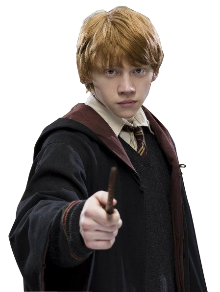
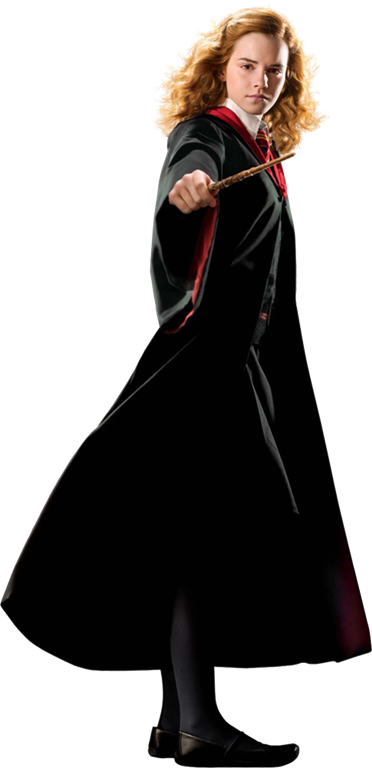

-
Harry Potter
Aluno de Hogwarts
Casa Grifinória

Descrição
Harry Potter, conhecido como o o menino que sobreviveu. Sofreu um ataque pelo bruxo das trevas,Lord Voldemort, cujo o nome é temido ao se pronunciar pela bruxidade.Sobrevivendo sendo um bebê, razão por qual é famoso, pois ninguém sabe como. Apanhador mais jovem do século do time de Quadribol da Grifinória, é melhor amigo de Rony Weasley e Hermione Granger. Mora com os seus tios Valter e Petúnia Dusley e seu primo Duda.
-
Rony Weasley
Aluno de Hogwarts
Casa Grifinória
Descrição
Rony Weasley, melhor amigo de Harry Potter e Hermione Granger. Se conheceram no trem á caminho de Hogwarts, no primeiro ano, se tornando melhor amigo de Harry imediatamente e tendo no início, como Harry, uma grande antipatia por Hermione. É muito fã de Quadribol e torce pelos Chudley Cannons. Quinto filho de Arthur e Molly Weasley, tem pavor de aranhas e é muito bom no xadrez de bruxo.
-
Hermione Granger
Aluna de Hogwarts
Casa Grifinória
Descrição
Hermione Granger, conhecida como sabe-tudo, causando grande irritação do professor Snape em suas aulas, todos a chamam pelo menos uma vez, Rony a chama pelo menos duas vezes. Quando conheceu Harry e Rony no trem a caminho de Hogwarts no primeiro ano, causou uma grande antipatia neles. Até que quando foi salva pelo trasgo montanhês adulto na festa de Halloween no primeiro ano e a partir daí se tornou a melhor amiga deles. É excelente em todas as matérias de Hogwarts e ama estudar e ler livros.
-
Draco Malfoy
Aluno de Hogwarts
Casa Sonserina

Descrição
Draco Malfoy, filho da rica e antiga família de sangue puro(pelo que se autoproclamam), os Malfoy. Arqui-inimigo de Harry Potter, desde que se falaram na Madame Malkin: vestes para todas as ocasiões, no Beco Diagonal. Ao saber que o garoto com quem falara era o famoso Harry Potter, demonstrou interesse e ofereceu sua amizade no trem á caminho de Hogwarts no primeiro ano, sentindo raiva ao Harry recusar, após ofender a família Weasley. Vive chamando Hermione de sangue-ruim. Joga como apanhador no time de Quadribol da Sonserina.